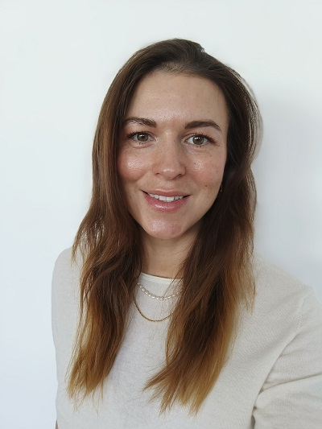

Junior Python Developer | Data & Web
Mám technické zázemí z IT prostředí a praktické zkušenosti s Pythonem, datovou analýzou a tvorbou menších webových aplikací. Zajímá mě nejen samotný vývoj, ale i to, jak software vzniká v rámci IT projektů – od práce s daty až po spolupráci v týmu. Zaměřuji se na srozumitelný, udržitelný kód a praktická řešení.

O mně
Jmenuji se Dagmar Vodáková. Několik let jsem pracovala v oblasti softwarové dokumentace a podpory vývoje ve společnosti ŠKODA ELECTRIC, kde jsem se pohybovala v prostředí IT projektů, nástrojů a procesů.
Aktuálně se zaměřuji na programování v Pythonu, datovou analýzu a tvorbu menších webových aplikací. Učení kombinuji s vlastními projekty a praktickým využíváním technologií.
Zobrazit CV →